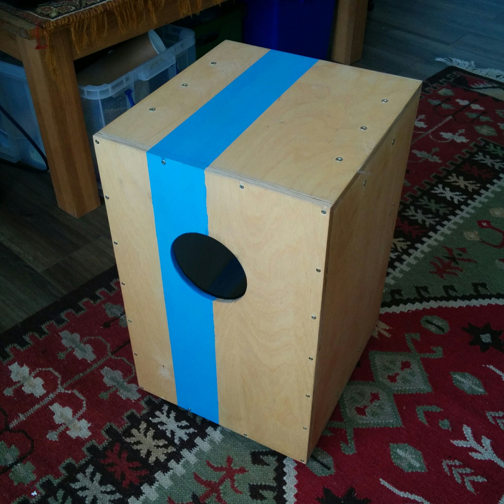

<div class="home">

  {% for post in site.posts %}

    {% capture current_column %}{% cycle '1', '2', '3' %}{% endcapture %}

    {% case current_column %}
      {% when '1' %}
        <div class="gr-row">
          <div class="gr-col">
            <a href="{{ post.url | prepend: site.baseurl }}">
              
            </a>
           </div>
      {% when '2' %}
          <div class="gr-col">
            <a href="{{ post.url | prepend: site.baseurl }}">
              
            </a> 
          </div>
      {% when '3' %}
          <div class="gr-col">
            <a href="{{ post.url | prepend: site.baseurl }}">
              
            </a>
          </div>
        </div>  
    {% endcase %}

    {% if forloop.last %}
      {% capture length_mod_3 %}{{ forloop.length | modulo : 3 }}{% endcapture %}
      {% if length_mod_3 != '0' %}
          <!-- Oh what fun this language is. -->
        </div>
      {% endif %}
    {% endif %}
  {% endfor %}

<!-- 
  <ul class="post-list">
    {% for post in site.posts %}
      <li>
        <span class="post-meta">{{ post.date | date: "%b %-d, %Y" }}</span>

        <h2>
          <a class="post-link" href="{{ post.url | prepend: site.baseurl }}">{{ post.title }}</a>
        </h2>
      </li>
    {% endfor %}
  </ul>
 -->
</div>
